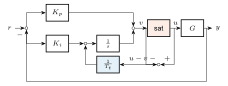
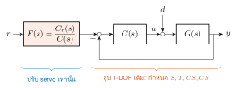
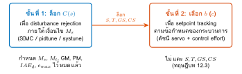
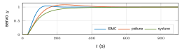
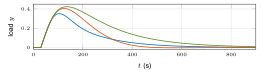
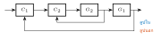
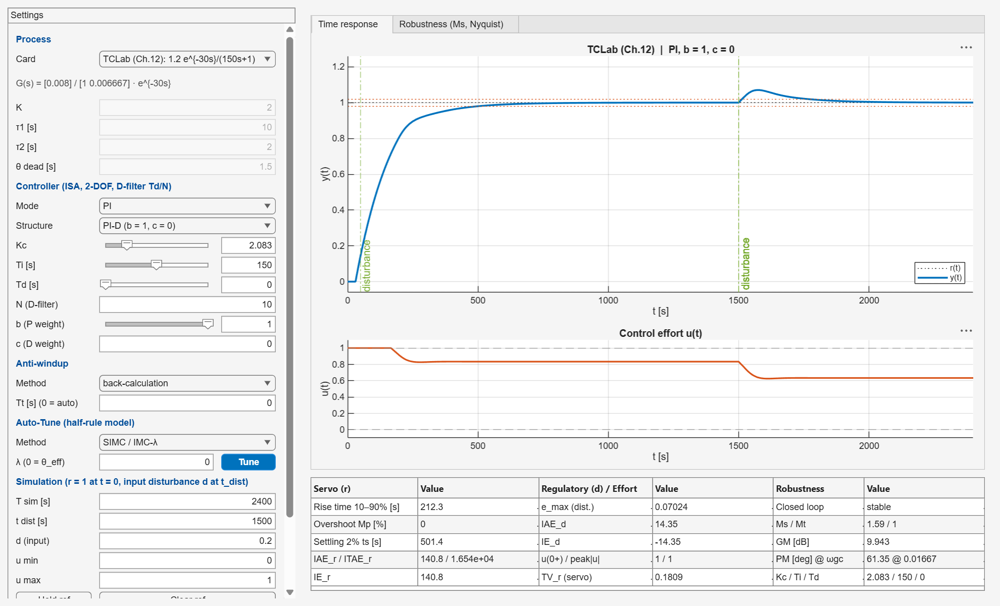

01068007 ระบบควบคุม: การวิเคราะห์และการออกแบบเชิงแบบจำลอง
บทที่ 12
การเพิ่มสมรรถนะการควบคุมแบบพีไอดี
PID Control Enhancement
derivative filter · anti-windup · 2-DOF PID · ดัชนีสมรรถนะ · Ms · SIMC / pidtune / systune · digital PID
รศ.ดร.อาจินต์ น่วมสำราญ
ภาควิชาวิศวกรรมการวัดและควบคุม คณะวิศวกรรมศาสตร์ สถาบันเทคโนโลยีพระจอมเกล้าเจ้าคุณทหารลาดกระบัง
ทำไมต้องมีบทนี้
ภาพรวม
PID ในตำรา (บทที่ 8) ยังใช้กับระบบจริงไม่ได้ทันที:
- derivative kick เมื่อ setpoint เปลี่ยน
- noise amplification จากพจน์อนุพันธ์
- integrator windup เมื่อแอคชูเอเตอร์อิ่มตัว
- 1-DOF trade-off: servo กับ regulatory ผูกกัน
แกนหลักของบทคือ 2-DOF PID ที่ออกแบบภายใต้เงื่อนไข robustness
ประโยชน์ 4 ด้าน
- ใช้งานจริงได้: filter, anti-windup, bumpless
- ออกแบบอย่างมีหลักการ: แยก disturbance ออกจาก setpoint
- ประเมินอย่างเป็นระบบ: ดัชนี + $M_s$
- ต่อยอด MBD: ตัวควบคุมนี้ไปทำ MIL/SIL/PIL/HIL ในบทที่ 13
01068007 Control Systems · Chapter 12 · รศ.ดร.อาจินต์ น่วมสำราญ2 / 55
ผลลัพธ์การเรียนรู้ (LO12.1–12.10)
ภาพรวม
| LO12.1 | อธิบายข้อจำกัดของ PID ในอุดมคติ | U |
| LO12.2 | แปลง ideal / parallel / series | Ap |
| LO12.3 | ออกแบบ derivative filter, เลือก PID / PI-D / I-PD | Ap |
| LO12.4 | วิเคราะห์ saturation, เลือก anti-windup และ $T_t$ | An |
| LO12.5 | พิสูจน์การแยก servo / regulatory | An |
| LO12.6 | คำนวณดัชนีสมรรถนะ 4 กลุ่ม | E |
| LO12.7 | Gang of Four, $M_s$, $M_t$ ↔ GM/PM | An |
| LO12.8 | ออกแบบ 2-DOF PID สองขั้นภายใต้ $M_s$ | C |
| LO12.9 | เลือก feedforward / cascade / Smith / gain scheduling | U |
| LO12.10 | PID ดิจิทัล + MATLAB/Simulink | Ap |
CLO ที่เกี่ยวข้อง
CLO6 (หลัก) · CLO5 (รอง) · CLO7 (เชื่อมต่อบทที่ 13 MBD V-Model) · พื้นฐาน: PID (บทที่ 8), time-domain spec (บทที่ 5), Nyquist/Bode, GM/PM (บทที่ 10–11) 01068007 Control Systems · Chapter 12 · รศ.ดร.อาจินต์ น่วมสำราญ3 / 55
กรณีศึกษาหลักของบท
ภาพรวม
$$G(s)=\frac{K\,e^{-\theta s}}{\tau s+1}=\frac{1.2\,e^{-30s}}{150s+1}$$
- $K=1.2$, $\tau=150$ s, $\theta=30$ s, $\theta/\tau=0.2$
- กระบวนการอุณหภูมิแบบ FOPDT เดียวกับชุด TCLab ของรายวิชา
- ทุกตัวเลขในบทคำนวณด้วย
ch12_*.m (ตรวจซ้ำบน MATLAB R2026a)
ค่าอ้างอิงที่จะพบตลอดบท
SIMC ($\lambda=\theta$): $K_p=2.0833$, $T_i=150$ s
$M_s=1.5905$, $M_t=1.0000$
GM $=3.14$ (9.94 dB), PM $=61.4^\circ$
$IE_d=-72.00$, $e_{max}=0.3510$
disk margin $\alpha=0.8832$
01068007 Control Systems · Chapter 12 · รศ.ดร.อาจินต์ น่วมสำราญ4 / 55
12.1 ทบทวน PID ในอุดมคติ (ISA / ideal form)
12.1 ข้อจำกัด
$$u(t)=K_p\left[e(t)+\frac{1}{T_i}\int_0^t e(\xi)\,d\xi+T_d\frac{de(t)}{dt}\right],\qquad C(s)=K_p\left(1+\frac{1}{T_i s}+T_d s\right)$$
- Derivative kick: $r$ เป็นขั้น → $T_d\,de/dt$ เป็นอิมพัลส์ → แอคชูเอเตอร์กระชาก
- Noise amplification: $|K_pT_d\,j\omega|$ โตไม่มีขอบเขตตามความถี่
- Integrator windup: อิ่มตัวแล้วพจน์ $I$ ยังสะสม → overshoot ใหญ่ ฟื้นตัวนาน
- 1-DOF trade-off: เร่ง disturbance rejection → setpoint overshoot มากขึ้น
01068007 Control Systems · Chapter 12 · รศ.ดร.อาจินต์ น่วมสำราญ5 / 55
12.1.3 Trade-off ของโครงสร้าง 1-DOF
12.1 ข้อจำกัด
$$Y=\underbrace{\frac{GC}{1+GC}}_{T}R+\underbrace{\frac{G}{1+GC}}_{GS}D$$
ปัญหา
$S=1/(1+GC)$ และ $T=GC/(1+GC)$ ถูกกำหนดโดย $C(s)$ ตัวเดียว → ปรับเพื่อ $r$ ย่อมกระทบ $d$ เสมอ
หัวข้อ 12.5 จะแสดงว่า 2-DOF แยกสองงานนี้ออกจากกันได้อย่างสมบูรณ์ 01068007 Control Systems · Chapter 12 · รศ.ดร.อาจินต์ น่วมสำราญ6 / 55
12.2.1 รูปแบบ Ideal, Parallel และ Series
12.2 รูปแบบ PID
| รูปแบบ | ฟังก์ชันถ่ายโอน | พารามิเตอร์ |
|---|
| Ideal (ISA) | $K_p\left(1+\dfrac{1}{T_is}+T_ds\right)$ | $K_p,\ T_i,\ T_d$ |
| Parallel | $K_p+\dfrac{K_i}{s}+K_ds$ | $K_p,\ K_i,\ K_d$ |
| Series (interacting) | $K_c'\left(1+\dfrac{1}{T_i's}\right)(1+T_d's)$ | $K_c',\ T_i',\ T_d'$ |
Ideal ↔ Parallel ตรงไปตรงมา: $$K_i=\frac{K_p}{T_i},\qquad K_d=K_pT_d$$
Series → Ideal ได้เสมอ (กระจายผลคูณ): $$K_p=K_c'\frac{T_i'+T_d'}{T_i'},\ T_i=T_i'+T_d',\ T_d=\frac{T_i'T_d'}{T_i'+T_d'}$$
01068007 Control Systems · Chapter 12 · รศ.ดร.อาจินต์ น่วมสำราญ7 / 55
12.2.2 ทฤษฎีบท 12.1: Ideal → Series ได้เมื่อใด
12.2 รูปแบบ PID
ทฤษฎีบท 12.1
PID แบบ ideal แปลงเป็นแบบ series ได้ ก็ต่อเมื่อ $T_i\ge4T_d$ โดย
$$K_c'=\frac{K_p}{2}\Bigl(1+\sqrt{1-4T_d/T_i}\Bigr),\quad T_i'=\frac{T_i}{2}\Bigl(1+\sqrt{1-4T_d/T_i}\Bigr),\quad T_d'=\frac{T_i}{2}\Bigl(1-\sqrt{1-4T_d/T_i}\Bigr)$$
พิสูจน์โดยย่อ: จาก series → ideal ได้ $T_i'+T_d'=T_i$ และ $T_i'T_d'=T_iT_d$ ดังนั้น $T_i',T_d'$ คือรากของ $x^2-T_ix+T_iT_d=0$ ซึ่งเป็นจำนวนจริง ⇔ $T_i^2-4T_iT_d\ge0$ ⇔ $T_d/T_i\le1/4$ ∎
ตัวอย่าง 12.2–12.3 (ch12_01_pid_forms.m)
series $(2,10,2)$ → ideal: $K_p=2.4$, $T_i=12$ s, $T_d=1.6667$ s
ideal $(3,20,5)$ → parallel: $K_i=0.15$, $K_d=15$ · series: $T_d/T_i=1/4$ พอดี → $K_c'=1.5$, $T_i'=T_d'=10$ s 01068007 Control Systems · Chapter 12 · รศ.ดร.อาจินต์ น่วมสำราญ8 / 55
12.2.3 ข้อควรระวังกับ PLC/DCS ต่างผู้ผลิต
12.2 รูปแบบ PID
สาเหตุที่พบบ่อยของลูปที่แกว่งหลังเปลี่ยนอุปกรณ์
ผู้ผลิตแต่ละรายใช้รูปแบบ PID และหน่วยต่างกัน การนำค่าที่จูนจากรูปแบบหนึ่งไปใส่อีกรูปแบบโดยไม่แปลง
- Proportional band: $PB=100/K_p$ (%)
- Reset rate: repeats/min $=1/T_i$
- หน่วยเวลา: วินาที หรือ นาที
- รูปแบบ: ideal, parallel หรือ series
$K_p=3$, $T_i=20$ s
$PB=33.33\%$
reset rate $=0.05$ repeats/s $=3.0$ repeats/min 01068007 Control Systems · Chapter 12 · รศ.ดร.อาจินต์ น่วมสำราญ9 / 55
12.3.1 Derivative filter และการเลือก N
12.3 พจน์อนุพันธ์
$$D(s)=\frac{K_pT_d\,s}{1+\dfrac{T_d}{N}s}$$
- $T_f=T_d/N$
- อัตราขยายความถี่สูงจำกัดที่ $K_p(1+N)$
- $N$ ทั่วไป 5–20: $N$ น้อย → กรอง noise ดี แต่ D ทำงานน้อยลง
| $N$ | $T_f$ (s) | HF gain |
|---|
| 5 | 1.00 | 12 (21.6 dB) |
| 10 | 0.50 | 22 (26.9 dB) |
| 20 | 0.25 | 42 (32.5 dB) |
01068007 Control Systems · Chapter 12 · รศ.ดร.อาจินต์ น่วมสำราญ10 / 55
12.3.2 Derivative kick และ PI-D (derivative on measurement)
12.3 พจน์อนุพันธ์
$r$ คงที่เป็นช่วง ๆ → $de/dt=-dy/dt$ ทุกช่วง ยกเว้นขณะที่ $r$ เปลี่ยน
$$u=K_pe+\frac{K_p}{T_i}\!\int\! e\,dt-\frac{K_pT_ds}{1+T_ds/N}\,y$$
จำลองกรณีศึกษา, $T_d=10$ s, $N=10$
$r$: 0 → 1 ที่ $t=10$ s
PID: $u_{max}=\mathbf{22.5}$ ($=K_p(1+N)$)
PI-D: $u_{max}=\mathbf{2.50}$
01068007 Control Systems · Chapter 12 · รศ.ดร.อาจินต์ น่วมสำราญ11 / 55
12.3.3 โครงสร้าง I-PD
12.3 พจน์อนุพันธ์
ย้ายพจน์สัดส่วนไปกระทำกับ $-y$ ด้วย → setpoint เข้าสู่ตัวควบคุมผ่านพจน์อินทิกรัลเท่านั้น
$$u=\frac{K_p}{T_i}\int e\,dt-K_p\,y-\frac{K_pT_ds}{1+T_ds/N}\,y\qquad\text{(I-PD)}$$
- $u$ เปลี่ยนอย่างนุ่มนวลมากเมื่อ setpoint เปลี่ยน
- แลกกับการตอบสนองต่อ setpoint ที่ช้าลง
มองไปข้างหน้า
PI-D และ I-PD คือกรณีพิเศษของโครงสร้าง 2-DOF ในหัวข้อ 12.5
PI-D: $b=1,c=0$ · I-PD: $b=c=0$ 01068007 Control Systems · Chapter 12 · รศ.ดร.อาจินต์ น่วมสำราญ12 / 55
12.4.1 Actuator saturation และกลไกการเกิด windup
12.4 Anti-windup
- แอคชูเอเตอร์จริงมี $u_{min}\le u\le u_{max}$ เสมอ (วาล์ว 0–100%, กำลังฮีตเตอร์)
- $v$ เกินขีดจำกัด → ลูปเปิดชั่วคราว ($u=u_{max}$ คงที่)
- แต่พจน์ $I$ ยังสะสม $e$ ต่อไป
- เมื่อ $y$ ถึง setpoint: $I$ สูงเกินจำเป็นมาก ต้องรอให้ $e<0$ นานพอจึง "คลาย"
- ผล: overshoot ใหญ่ + เวลาเข้าที่ยาว
01068007 Control Systems · Chapter 12 · รศ.ดร.อาจินต์ น่วมสำราญ13 / 55
12.4.2–12.4.3 Clamping และ Back-calculation
12.4 Anti-windup
Conditional integration (clamping)
$$\frac{dI}{dt}=\begin{cases}0,&(v>u_{max}\wedge e>0)\ \vee\ (v\lt u_{min}\wedge e\lt 0)\\K_ie,&\text{กรณีอื่น}\end{cases}$$
Back-calculation
$$\frac{dI}{dt}=K_ie+\frac{1}{T_t}\bigl(u-v\bigr)$$
ไม่อิ่มตัว: $u=v$ → อินทิกรัลปกติ · อิ่มตัว: $(u-v)/T_t$ ดึง $I$ กลับด้วยค่าคงตัวเวลา $T_t$

การเลือก $T_t$
$T_d<T_t<T_i$ · PID: $T_t=\sqrt{T_iT_d}$ · PI (ไม่มี $T_d$): บทนี้ใช้ $T_t=T_i/2$ 01068007 Control Systems · Chapter 12 · รศ.ดร.อาจินต์ น่วมสำราญ14 / 55
ตัวอย่าง 12.1: ผลของ windup ต่อกรณีศึกษา
12.4 Anti-windup
PI ($K_p=2.0833$, $T_i=150$ s, $b=1$), $0\le u\le1.0$ (ค่าคงตัวที่ต้องการ $1/K=0.833$), step $r=1$
| กรณี | $M_p$ % | $t_s$ (s) | $I_{max}$ |
|---|
| เชิงเส้น | 4.06 | 181.7 | – |
| ไม่มี AW | 17.39 | 957.4 | 1.753 |
| BC ($T_t$=75) | 0.00 | 501.4 | 0.833 |
| conditional | 0.00 | 557.9 | 0.833 |
$I_{max}$ ไม่มี AW เกินค่าที่ต้องการ มากกว่า 2 เท่า ทั้งสองวิธีจำกัด $I$ ไว้ที่ 0.833 = $u$ คงตัวพอดี
01068007 Control Systems · Chapter 12 · รศ.ดร.อาจินต์ น่วมสำราญ15 / 55
12.4.4 Bumpless transfer
12.4 Anti-windup
ปัญหา: สลับ Manual → Auto ขณะที่ $I$ ไม่สอดคล้องกับสัญญาณที่ผู้ปฏิบัติงานจ่ายอยู่ → $u$ กระโดดทันที
วิธีแก้: ในโหมด Manual ให้อินทิเกรเตอร์ติดตามสัญญาณ manual ตลอดเวลา
$$\frac{dI}{dt}=K_ie+\frac{1}{T_t}\bigl(u_{man}-v\bigr)$$
= โครงสร้าง back-calculation เดิม เพียงแทน $u$ ด้วย $u_{man}$
ทำไม PLC/DCS ใช้โครงสร้างเดียวกัน
โครงสร้าง tracking เดียวใช้ได้ทั้ง
- anti-windup
- bumpless transfer
- override / selector control
01068007 Control Systems · Chapter 12 · รศ.ดร.อาจินต์ น่วมสำราญ16 / 55
12.5.1 นิยาม 12.2: 2-DOF PID แบบ setpoint weighting
12.5 2-DOF PID
นิยาม 12.2 (Araki & Taguchi, Åström & Hägglund)
$$U(s)=K_p\bigl(b\,R-Y\bigr)+\frac{K_i}{s}\bigl(R-Y\bigr)+\frac{K_ds}{1+T_fs}\bigl(c\,R-Y\bigr),\qquad 0\le b,c\le1$$
พจน์อินทิกรัลต้องใช้ค่าผิดพลาดจริง $R-Y$ เสมอ เพื่อให้ $e_{ss}=0$
| $b$ | $c$ | โครงสร้าง | ลักษณะ |
|---|
| 1 | 1 | PID ปกติ (1-DOF) | เร็ว แต่ kick + overshoot |
| 1 | 0 | PI-D | ไม่มี derivative kick |
| 0 | 0 | I-PD | นุ่มนวลที่สุด ช้าที่สุด |
| $0<b<1$ | 0 | 2-DOF ทั่วไป | ปรับ servo ได้ต่อเนื่อง |
01068007 Control Systems · Chapter 12 · รศ.ดร.อาจินต์ น่วมสำราญ17 / 55
12.5.2 โครงสร้าง prefilter ที่สมมูลกัน
12.5 2-DOF PID
จัดรูปใหม่เป็น $U=C_r(s)R-C_y(s)Y$:
$$C_y(s)=K_p+\frac{K_i}{s}+\frac{K_ds}{1+T_fs}=C(s),\qquad C_r(s)=bK_p+\frac{K_i}{s}+\frac{cK_ds}{1+T_fs}$$

01068007 Control Systems · Chapter 12 · รศ.ดร.อาจินต์ น่วมสำราญ18 / 55
12.5.3 ทฤษฎีบท 12.3: การแยก servo ออกจาก regulatory
12.5 2-DOF PID
ทฤษฎีบท 12.3 (decoupling theorem)
$$Y=\underbrace{\frac{G\,C_r}{1+GC}}_{\text{servo}}R+\underbrace{\frac{G}{1+GC}}_{\text{regulatory}}D$$
$b$ และ $c$ ปรากฏใน $C_r$ เท่านั้น จึงไม่มีผลต่อ $S$, $T$, $GS$, $CS$ = ไม่มีผลต่อ disturbance rejection, ความทนทาน, เสถียรภาพ และการขยาย measurement noise
ประเด็นสำคัญ
2-DOF ไม่ได้ทำให้ระบบ "ดีขึ้นทุกด้าน" แต่ทำให้ผู้ออกแบบตัดสินใจแยกกันได้: (1) เลือก $C(s)$ เพื่อ disturbance rejection + robustness → (2) เลือก $b,c$ เพื่อ setpoint tracking โดยไม่ต้องกลับไปแก้ขั้นแรก 01068007 Control Systems · Chapter 12 · รศ.ดร.อาจินต์ น่วมสำราญ19 / 55
ยืนยันทฤษฎีบท 12.3 ด้วยการจำลอง
12.5 2-DOF PID
$C(s)$ เดียวกันทุกเส้น · servo เปลี่ยนตาม $b$ · regulatory: $\max|y_{b=0}-y_{b=1}|=\mathbf{0.000}$ (ทับกันสนิท)
01068007 Control Systems · Chapter 12 · รศ.ดร.อาจินต์ น่วมสำราญ20 / 55
12.5.4 ทฤษฎีบท 12.4: ค่าผิดพลาดสะสมต่อ load disturbance
12.5 2-DOF PID
ทฤษฎีบท 12.4
PI/PID ใด ๆ ที่ทำให้วงปิดเสถียร, load disturbance ขั้น $d_0$ ที่ด้านเข้า ($r=0$):
$$IE_d=\int_0^\infty e(t)\,dt=-\frac{d_0}{K_i}$$ ไม่ขึ้นกับ $K_p$, $K_d$, $b$, $c$ และอัตราขยายของกระบวนการ
พิสูจน์: สถานะคงตัว $e(\infty)=0$ และพจน์ D $=0$ → $u(\infty)=K_i\int_0^\infty e\,dt$ แต่ $y=0$ ในสถานะคงตัวต้องการ $u(\infty)+d_0=0$ ⇒ $K_i\,IE_d=-d_0$ ∎
กรณีศึกษา $K_i=0.013889$
$IE_d=-72.00$ (ทฤษฎี $-1/K_i=-72.00$) · $IAE_d=72.00$ · $e_{max}=0.3510$ ที่ $t\approx104$ s 01068007 Control Systems · Chapter 12 · รศ.ดร.อาจินต์ น่วมสำราญ21 / 55
ผลเชิงปิดฝั่ง servo: IEr
12.5 2-DOF PID
สำหรับ setpoint ขั้นขนาด 1 กับ 2-DOF PI: $u(\infty)=1/K$ และ $u(\infty)=K_p(b-1)+K_i\,IE_r$
$$\boxed{IE_r=\frac{1}{K_iK}+T_i(1-b)}$$
- ลด $b$ → servo ช้าลงเชิงเส้นตาม $T_i(1-b)$
- ขณะที่ $IE_d=-d_0/K_i$ ยืนยันว่า $b$ ไม่มีผลต่อ regulatory เลย
- ไม่มีการข้ามศูนย์ → $IAE=|IE|$ คำนวณได้ทันที
ตรวจด้วยตัวเลข
$b=0$: $\dfrac{1}{0.013889\times1.2}+150=60+150=\mathbf{210}$
$b=1$: $IE_r=60.0$ แต่มี overshoot → $IAE_r=65.07>IE_r$ 01068007 Control Systems · Chapter 12 · รศ.ดร.อาจินต์ น่วมสำราญ22 / 55
12.6.1–12.6.2 Integral และ time-domain indices
12.6 ดัชนีสมรรถนะ
$$IAE=\int_0^\infty|e|\,dt,\qquad ISE=\int_0^\infty e^2\,dt,\qquad ITAE=\int_0^\infty t\,|e|\,dt$$
- IAE: ลงโทษทุกขนาดเท่ากัน
- ISE: ลงโทษค่าผิดพลาดขนาดใหญ่มากกว่า
- ITAE: ลงโทษค่าผิดพลาดที่ค้างนาน → วัดความเร็วในการเข้าที่
- $M_p$, $t_s$ (2%) จากบทที่ 5 ยังใช้ได้
- regulatory ใช้ $e_{max}$ แทน $M_p$
- ไม่ข้ามศูนย์ ⇒ $IAE=|IE|$ จาก (12.13)–(12.14)
01068007 Control Systems · Chapter 12 · รศ.ดร.อาจินต์ น่วมสำราญ23 / 55
12.6.3 Control effort: Total Variation
12.6 ดัชนีสมรรถนะ
นิยาม 12.5: Total Variation
$$TV=\sum_k\bigl|u_{k+1}-u_k\bigr|\;\approx\;\int_0^\infty\left|\frac{du}{dt}\right|dt$$
วัดปริมาณการเคลื่อนที่ทั้งหมดของแอคชูเอเตอร์: TV สูง = สึกหรอ + ใช้พลังงานมาก
ตัวชี้วัด control effort อื่น- $u(0^+)=bK_p$ (ขนาดการกระโดดทันที)
- $\max|u|$ (เทียบกับขีดจำกัด)
ข้อสังเกต
TV ไม่ได้ต่ำสุดที่ $b=0$ เสมอ (ดูกรณีศึกษา 12.8) 01068007 Control Systems · Chapter 12 · รศ.ดร.อาจินต์ น่วมสำราญ24 / 55
12.6.4 ทำไมดัชนีเดียวทำลายคุณค่าของ 2-DOF
12.6 ดัชนีสมรรถนะ
รวม servo กับ regulatory เป็นดัชนีเดียว (เช่น IAE รวม) → ผู้ออกแบบถูกบังคับให้แลกเปลี่ยนสองงานนี้อีกครั้ง ซึ่งเป็นสิ่งที่ 2-DOF ถูกออกแบบมาเพื่อขจัด
| กลุ่ม | ดัชนี | ขึ้นกับ |
|---|
| Regulatory | $IAE_d$, $e_{max}$, $t_{s,d}$ | $C(s)$ เท่านั้น |
| Servo | $IAE_r$, $ITAE_r$, $M_p$, $t_s$ | $C(s)$ และ $b,c$ |
| Control effort | TV, $u(0^+)$, $\max|u|$ | $C(s)$ และ $b,c$ |
| Robustness (constraint) | $M_s$, $M_t$, GM, PM | $C(s)$ เท่านั้น |
หลักคิด
Robustness เป็นเงื่อนไขบังคับ ไม่ใช่สิ่งที่นำไปถ่วงน้ำหนักรวมกับดัชนีอื่น 01068007 Control Systems · Chapter 12 · รศ.ดร.อาจินต์ น่วมสำราญ25 / 55
12.7.1 Sensitivity และ complementary sensitivity
12.7 ความทนทาน
$$S(s)=\frac{1}{1+L(s)},\qquad T(s)=\frac{L(s)}{1+L(s)},\qquad S+T=1,\qquad L=GC$$
- $|S(j\omega)|$: disturbance ที่ $\omega$ ถูกลดทอนหรือขยาย
- $|T(j\omega)|$: การตอบสนองต่อ setpoint (1-DOF) และการส่งผ่าน measurement noise
- $S+T=1$ ⇒ ลดทั้งสองพร้อมกันที่ความถี่เดียวกันไม่ได้
01068007 Control Systems · Chapter 12 · รศ.ดร.อาจินต์ น่วมสำราญ26 / 55
12.7.2 Gang of Four
12.7 ความทนทาน
ลูปที่มีอินพุตภายนอก 3 ตัว $(r,d,n)$ บรรยายครบด้วย
$$S=\tfrac{1}{1+GC},\quad T=\tfrac{GC}{1+GC},\quad GS=\tfrac{G}{1+GC},\quad CS=\tfrac{C}{1+GC}$$
- internally stable ⇔ ทั้งสี่เสถียร
- $GS$: $d\to y$ (load disturbance)
- $CS$: $n\to u$ (noise → แอคชูเอเตอร์)
01068007 Control Systems · Chapter 12 · รศ.ดร.อาจินต์ น่วมสำราญ27 / 55
12.7.3 นิยาม 12.6: Maximum sensitivity Ms
12.7 ความทนทาน
นิยาม 12.6
$$M_s=\max_\omega|S(j\omega)|=\frac{1}{\min_\omega|1+L(j\omega)|},\qquad M_t=\max_\omega|T(j\omega)|$$
$1/M_s$ = ระยะที่สั้นที่สุดจากเส้นโค้ง Nyquist ของ $L$ ถึงจุดวิกฤต $-1$
กรณีศึกษา: $1/M_s=0.629$
01068007 Control Systems · Chapter 12 · รศ.ดร.อาจินต์ น่วมสำราญ28 / 55
ทฤษฎีบท 12.7: ขอบเขตของ GM และ PM จาก Ms
12.7 ความทนทาน
ทฤษฎีบท 12.7 (Skogestad & Postlethwaite)
$$GM\ge\frac{M_s}{M_s-1},\qquad PM\ge2\arcsin\frac{1}{2M_s}$$
ขอบเขตทำงานทางเดียว
$M_s$ ต่ำ ⇒ GM, PM ดี
GM, PM ดี $\not\Rightarrow$ $M_s$ ต่ำ เพราะ Nyquist อาจเข้าใกล้ $-1$ ที่ความถี่ที่ไม่ใช่ทั้ง $\omega_{gc}$ และ $\omega_{pc}$กรณีศึกษา $M_s=1.5905$
ขอบเขต: GM $\ge2.69$, PM $\ge36.7^\circ$
จริง: GM $=3.14$ (9.94 dB), PM $=61.4^\circ$ ✓ 01068007 Control Systems · Chapter 12 · รศ.ดร.อาจินต์ น่วมสำราญ29 / 55
12.7.4 ช่วงค่า Ms ที่แนะนำ
12.7 ความทนทาน
| $M_s$ | GM ขั้นต่ำ | PM ขั้นต่ำ | ลักษณะ |
|---|
| 1.4 | 3.50 (10.88 dB) | $41.85^\circ$ | ทนทานสูง ตอบสนองช้า |
| 1.6 | 2.67 (8.52 dB) | $\mathbf{36.42^\circ}$ | สมดุล ใช้ทั่วไปในอุตสาหกรรม |
| 2.0 | 2.00 (6.02 dB) | $28.96^\circ$ | เร็ว ทนทานน้อย |
แนวคิด functional safety
ยอมรับระบบที่ช้าลงเล็กน้อยเพื่อแลกกับ $M_s$ ที่ปลอดภัย: $M_s$ คือเงื่อนไขบังคับของขั้นที่ 1 ในการออกแบบสองขั้น (12.8) 01068007 Control Systems · Chapter 12 · รศ.ดร.อาจินต์ น่วมสำราญ30 / 55
12.8 ขั้นตอนการออกแบบสองขั้น
12.8 ออกแบบสองขั้น

SIMC (Skogestad IMC) สำหรับ FOPDT: $$K_p=\frac{\tau}{K(\lambda+\theta)},\quad T_i=\min\{\tau,4(\lambda+\theta)\}$$
$\lambda$ = ค่าคงตัวเวลาวงปิดที่ต้องการ
$\lambda=\theta$ ให้ $M_s\approx1.6$ สำหรับ FOPDT ทั่วไป
$\lambda$ มากขึ้น → ช้าลงแต่ทนทานขึ้น
01068007 Control Systems · Chapter 12 · รศ.ดร.อาจินต์ น่วมสำราญ31 / 55
ตัวอย่าง 12.2: 2-DOF PI สำหรับกรณีศึกษา
12.8 ออกแบบสองขั้น
ขั้นที่ 1: SIMC ด้วย $\lambda=\theta=30$ s
$$K_p=\frac{150}{1.2(30+30)}=2.0833,\quad T_i=\min\{150,240\}=150\text{ s},\quad K_i=\frac{K_p}{T_i}=0.013889$$
ความทนทาน- $M_s=1.5905$ ที่ $\omega=0.0381$ rad/s, $M_t=1.0000$
- GM $=3.14$ (9.94 dB) ที่ $\omega_{pc}=0.0524$
- PM $=61.4^\circ$ ที่ $\omega_{gc}=0.0167$ rad/s
- ผ่านขอบเขต (12.20): GM $\ge2.69$, PM $\ge36.7^\circ$
Regulatory (ไม่ขึ้นกับ $b$)- $IAE_d=1/K_i=72.00$
- $e_{max}=0.3510$ ที่ $t\approx104$ s
- $b=0$ กับ $b=1$ ทับกันสนิท
Servo: ขึ้นกับ $b$ → ตารางถัดไป
01068007 Control Systems · Chapter 12 · รศ.ดร.อาจินต์ น่วมสำราญ32 / 55
ขั้นที่ 2: ผลของ b ต่อ servo (ch12_04_2dof_sweep.m)
12.8 ออกแบบสองขั้น
| $b$ | $u(0^+)$ | $IE_r$ | $IAE_r$ | $ITAE_r$ | TV | $M_p$ (%) | $t_s$ (s) |
|---|
| 0 | 0.000 | 210.0 | 210.0 | 33 296 | 0.904 | 0.00 | 646.3 |
| 0.25 | 0.521 | 172.5 | 172.5 | 25 422 | 0.651 | 0.00 | 603.1 |
| 0.50 | 1.042 | 135.0 | 135.0 | 17 547 | 1.091 | 0.00 | 542.3 |
| 0.75 | 1.562 | 97.5 | 97.5 | 9 673 | 1.653 | 0.00 | 438.2 |
| 1.00 | 2.083 | 60.0 | 65.07 | 2 591 | 2.217 | 4.06 | 181.7 |
- $IE_r$ ตรงกับ (12.14) ทุกแถว: $b=0$ → $60+150=210$
- $b=1$ มี overshoot ⇒ $IAE_r>IE_r$ (65.07 เทียบกับ 60.0)
- ตลอดการเปลี่ยน $b$: $M_s$, GM, PM และ $IAE_d$ คงที่
01068007 Control Systems · Chapter 12 · รศ.ดร.อาจินต์ น่วมสำราญ33 / 55
TV กับ ITAEr: ดัชนีแต่ละตัวเลือก b ต่างกัน
12.8 ออกแบบสองขั้น
บทเรียนจากกรณีศึกษา
- $ITAE_r$ ลดลง 12.9 เท่า ($b$: 0 → 1)
- TV ต่ำสุดที่ $b=0.20$ ไม่ใช่ $b=0$: เมื่อ $b$ น้อย พจน์ $I$ ต้องผลัก $u$ เกินแล้วดึงกลับ
- $M_p$ เริ่มเกิน 0.5% เมื่อ $b\approx0.95$
- การเลือก $b$ = การตัดสินใจทางวิศวกรรม ไม่ใช่การหาค่าเหมาะสมของดัชนีเดียว
01068007 Control Systems · Chapter 12 · รศ.ดร.อาจินต์ น่วมสำราญ34 / 55
12.8.4 เปรียบเทียบวิธีจูน (1): Analytical — IMC และ SIMC
12.8 ออกแบบสองขั้น
IMC = direct synthesis: กำหนดวงปิดเป้าหมาย $T=e^{-\theta s}/(\lambda s+1)$ แล้วหา $C=T/\bigl(G(1-T)\bigr)$
$$C(s)=\frac{\tau s+1}{K}\cdot\frac{1}{(\lambda s+1)-e^{-\theta s}}\;\xrightarrow{\;e^{-\theta s}\approx1-\theta s\;}\;K_p=\frac{\tau}{K(\lambda+\theta)},\;T_i=\tau$$
- SIMC แก้ $T_i=\min\{\tau,4(\lambda+\theta)\}$: เมื่อ $\tau$ ยาวมาก การตัด pole ด้วย zero ของ PI ทำให้กำจัด load disturbance ช้า
ตัวอย่าง 12.3: IMC กับ loop shaping คือเรื่องเดียวกัน
$T_i=\tau$ ⇒ zero ตัด pole พอดี: $L(s)=\dfrac{K_pK}{T_i}\cdot\dfrac{e^{-\theta s}}{s}=\dfrac{e^{-30s}}{60s}$
$\omega_c=1/(\lambda+\theta)=0.01667$ rad/s, $PM=90^\circ-\theta\omega_c\cdot\frac{180^\circ}{\pi}=61.35^\circ$
⇒ การเลือก $\lambda$ ใน IMC คือการเลือก $\omega_c=1/(\lambda+\theta)$ ในภาษา loop shaping 01068007 Control Systems · Chapter 12 · รศ.ดร.อาจินต์ น่วมสำราญ35 / 55
12.8.4 เปรียบเทียบวิธีจูน (2): pidtune และ systune
12.8 ออกแบบสองขั้น
pidtune: frequency-domain loop shaping
$$|L(j\omega_c)|=1,\quad\angle L(j\omega_c)=-180^\circ+PM$$
หา $T_i$ จากเงื่อนไขเฟส แล้ว $K_p$ จากเงื่อนไขขนาด (บทที่ 11) · pidtune เพิ่มการเลือก $\omega_c$ อัตโนมัติ + DesignFocus
systune: structured $H_\infty$
$$\min_\vartheta\max_i\|f_i(\vartheta)\|_\infty\ \text{s.t.}\ \max_j\|g_j(\vartheta)\|_\infty\le1$$
non-convex, nonsmooth → อาจได้ local optimum → ใช้ RandomStart · TuningGoal.Margins ใช้ disk margin:
$$\alpha=\frac{2}{\|S-T\|_\infty},\ GM\in\Bigl[\tfrac{2-\alpha}{2+\alpha},\tfrac{2+\alpha}{2-\alpha}\Bigr],\ PM=\pm2\arctan\tfrac{\alpha}{2}$$
กรณีศึกษา (ch12_06_diskmargin.m)
$\alpha=0.8832$ ที่ $\omega=0.0343$ rad/s → disk GM $=\pm8.24$ dB, disk PM $=\pm47.65^\circ$ ต่ำกว่า GM/PM คลาสสิก (9.94 dB, 61.4°) เพราะ disk margin พิจารณาขนาดและเฟสพร้อมกัน 01068007 Control Systems · Chapter 12 · รศ.ดร.อาจินต์ น่วมสำราญ36 / 55
ผลจริงบน R2026a: SIMC vs pidtune vs systune
12.8 ออกแบบสองขั้น
| SIMC | pidtune | systune |
|---|
| $K_p$ | 2.0833 | 1.3246 | 1.2712 |
| $T_i$ (s) | 150.0 | 104.4 | 164.3 |
| $M_s$ | 1.5905 | 1.3805 | 1.3065 |
| GM (dB) | 9.94 | 13.48 | 14.30 |
| PM | 61.4° | 60.0° | 75.4° |
| disk $\alpha$ | 0.8832 | 1.0559 | 1.2039 |
| $M_p$ servo | 4.1% | 8.1% | 0% |
| $t_s$ servo (s) | 182 | 428 | 374 |
| $IAE_d$ (≈$1/K_i$) | 72.0 | 80.0 | 127.7 |
| $e_{max}$ | 0.351 | 0.405 | 0.423 |
pidtune: PM 60°, disturbance-rejection · systune: Tracking 150 s + Margins 6 dB/45°, pade(G,3), 5 random starts


อ่านผล
เครื่องมืออัตโนมัติให้ $M_s$ ต่ำกว่า (ทนทานกว่า) แต่แลกด้วย disturbance rejection ที่ช้ากว่า ($IAE_d$ +11% และ +77%) ส่วน SIMC ($\lambda=\theta$) ทำหน้าที่ขั้นที่ 1 ได้ดีที่สุดที่ $M_s\approx1.6$ 01068007 Control Systems · Chapter 12 · รศ.ดร.อาจินต์ น่วมสำราญ37 / 55
สรุปเปรียบเทียบสามแนวทาง
12.8 ออกแบบสองขั้น
| Analytical (SIMC) | pidtune | systune |
|---|
| ทฤษฎี | IMC, direct synthesis | Loop shaping | Structured $H_\infty$ |
| ผู้ใช้กำหนด | $\lambda$ ตัวเดียว | ชนิด, $\omega_c$, PM, DesignFocus | Tuning goals หลายข้อ |
| ความโปร่งใส | สูงมาก | ปานกลาง | ปานกลาง (ขึ้นกับ goals) |
| ขอบเขต | SISO ที่ลดรูปเป็น FOPDT/SOPDT | SISO LTI ใดก็ได้ | SISO/MIMO, multi-loop, cascade |
| จุดแข็ง | สอนง่าย ใช้ตรวจผลเครื่องมืออื่น | เร็ว ใช้ง่าย | บังคับ robustness ได้ตรง ๆ |
| จุดอ่อน | ผูกกับแบบจำลองอย่างง่าย | คุม trade-off ได้จำกัด | ต้องตั้งโจทย์เป็น อาจได้ local optimum |
ใช้ร่วมกัน
ใช้ SIMC เป็นค่าอ้างอิงที่อธิบายได้ แล้วใช้ pidtune/systune เมื่อโครงสร้างซับซ้อนขึ้น โดยตรวจ $M_s$ และ $IAE_d$ เทียบกับ SIMC ทุกครั้ง 01068007 Control Systems · Chapter 12 · รศ.ดร.อาจินต์ น่วมสำราญ38 / 55
โค้ด MATLAB: เปรียบเทียบสามวิธี (แก้ให้รันบน R2026a)
12.8 ออกแบบสองขั้น
G = tf(1.2,[150 1],'InputDelay',30);
C1 = pidstd(150/(1.2*60),150); % 1) SIMC, lambda = theta
opt = pidtuneOptions('PhaseMargin',60,'DesignFocus','disturbance-rejection');
C2 = pidtune(G,'PI',opt); % 2) pidtune
C0 = tunablePID('C','PI'); C0.u = 'e'; C0.y = 'u';
Gs = pade(G,3); Gs.u = 'u'; Gs.y = 'y'; % systune needs a rational plant
T0 = connect(Gs,C0,sumblk('e = r - y'),'r','y',{'u'});
T = systune(T0,[TuningGoal.Tracking('r','y',150) TuningGoal.Margins('u',6,45)], ...
systuneOptions('RandomStart',5));
C3 = pid(getBlockValue(T,'C')); % 3) systune
w = logspace(-5,0,40000);
for C = {pid(C1), C2, C3} % compare on the TRUE plant
L = G*C{1}; dm = diskmargin(L);
Ms = max(abs(squeeze(freqresp(feedback(1,L),w)))); % NOT norm(S,inf): internal delay
fprintf('Ms = %.4f, alpha = %.4f\n', Ms, dm.DiskMargin);
end
พบตอนรันจริงบน R2026a
norm(S,inf) และ getPeakGain ใช้กับ model ที่มี internal delay ไม่ได้ (error) → ใช้ freqresp บนกริดละเอียด หรือ norm(pade(S,6),inf) (ได้ 1.5904) ส่วน diskmargin และ margin ใช้กับ delay ได้ตรง 01068007 Control Systems · Chapter 12 · รศ.ดร.อาจินต์ น่วมสำราญ39 / 55
12.9.1–12.9.2 Feedforward และ Cascade
12.9 เทคนิคเสริม
Feedforward: วัด disturbance ได้ก่อนที่จะส่งผลต่อเอาต์พุต
$$C_{ff}(s)=-\frac{G_d(s)}{G(s)}$$
- ชดเชยก่อนลูปป้อนกลับเห็นค่าผิดพลาด
- ปฏิบัติจริง: static $C_{ff}=-G_d(0)/G(0)$ หรือ lead-lag
- เพราะ $G^{-1}$ อาจไม่ causal (มี dead time) หรือไม่เสถียร (zero ฝั่งขวา)
Cascade: ลูปในเร็ว (เช่น flow) อยู่ในลูปนอกช้า (เช่น อุณหภูมิ)
- ลูปในกำจัด disturbance ในส่วนของมันก่อนถึงลูปนอก
- ลูปในต้องเร็วกว่าลูปนอก 3–5 เท่า
- จูนลูปในก่อนเสมอ

01068007 Control Systems · Chapter 12 · รศ.ดร.อาจินต์ น่วมสำราญ40 / 55
12.9.3–12.9.4 Smith predictor และ Gain scheduling
12.9 เทคนิคเสริม
Smith predictor: dead time ยาว ($\theta/\tau>1$)
- ใช้แบบจำลองทำนายเอาต์พุตที่ไม่มี dead time → ออกแบบเสมือนไม่มี dead time ในลูป
- ข้อจำกัด: ไวต่อความคลาดเคลื่อนของแบบจำลอง โดยเฉพาะ $\theta$
- ไม่ช่วยการกำจัด load disturbance เท่าที่คาด
Gain scheduling: พลวัตเปลี่ยนตามจุดทำงาน (วาล์วไม่เชิงเส้น, pH)
- จูน PID หลายชุดตามจุดทำงาน แล้วสลับ/ประมาณค่าระหว่างชุด
- ตัวแปร scheduling ต้องวัดได้และเปลี่ยนช้ากว่าพลวัตของลูป
| เทคนิค | สถานการณ์ที่เหมาะสม |
|---|
| Feedforward | disturbance หลักวัดได้ และทราบ $G_d$ พอสมควร |
| Cascade | มีตัวแปรกลางที่วัดได้และตอบสนองเร็วกว่าตัวแปรหลัก |
| Smith predictor | dead time ยาวกว่าค่าคงตัวเวลา และแบบจำลองแม่นยำ |
| Gain scheduling | พลวัตเปลี่ยนตามจุดทำงานที่ระบุได้ด้วยตัวแปรที่วัดได้ |
01068007 Control Systems · Chapter 12 · รศ.ดร.อาจินต์ น่วมสำราญ41 / 55
12.10.1 การ discretize และการเลือก Ts
12.10 ดิจิทัล
Backward Euler (derivative on measurement):
$$I_k=I_{k-1}+K_iT_se_k,\qquad D_k=\frac{T_f}{T_f+T_s}D_{k-1}-\frac{K_d}{T_f+T_s}\bigl(y_k-y_{k-1}\bigr)$$
หรือ Tustin $s\leftarrow\frac{2}{T_s}\frac{z-1}{z+1}$: รักษาเสถียรภาพ และตอบสนองเชิงความถี่ใกล้เคียงกว่า
กฎการเลือก $T_s$
$T_s\approx(0.05\text{–}0.1)\,T_{63}$ ของวงปิด หรือ $\omega_{gc}T_s\approx0.05\text{–}0.15$
ZOH ≈ หน่วงครึ่งคาบ → PM ลด $\approx\omega_{gc}T_s/2$ rad| $T_s$ (s) | $\omega_{gc}T_s$ | PM ลด | PM | $M_p$ (sampled PI) |
|---|
| 1 | 0.017 | 0.48° | 60.87° | 4.61% |
| 5 | 0.083 | 2.39° | 58.96° | 7.18% |
| 10 | 0.167 | 4.77° | 56.58° | 10.98% |
| 20 | 0.333 | 9.55° | 51.80° | 19.31% |
ch12_08_digital.m: PM₀ = 61.35°, $\omega_{gc}=0.01667$ rad/s
01068007 Control Systems · Chapter 12 · รศ.ดร.อาจินต์ น่วมสำราญ42 / 55
12.10.2 Positional form และ Velocity form
12.10 ดิจิทัล
Positional: คำนวณ $u_k$ ทั้งค่า · Velocity (incremental): คำนวณเฉพาะส่วนเปลี่ยน
$$\Delta u_k=K_p\Bigl[(e_k-e_{k-1})+\frac{T_s}{T_i}e_k\Bigr],\qquad u_k=u_{k-1}+\Delta u_k$$
- anti-windup เกิดขึ้นเองเมื่อจำกัด $u_k$ หลังการบวก
- สลับ Manual/Auto ได้ราบรื่น → นิยมใน PLC/DCS
ตัวอย่าง 12.11: $K_p=2$, $T_i=20$ s, $T_s=1$ s
$u_0=0$, $e_0=0$; $e_1,e_2,e_3=1,0.8,0.5$
| $k$ | $e_k$ | $\Delta u_k$ | $u_k$ |
|---|
| 1 | 1.0 | +2.10 | 2.10 |
| 2 | 0.8 | −0.32 | 1.78 |
| 3 | 0.5 | −0.55 | 1.23 |
$\Delta u_1=2[(1-0)+\tfrac{1}{20}(1)]=2.10$
01068007 Control Systems · Chapter 12 · รศ.ดร.อาจินต์ น่วมสำราญ43 / 55
12.10.3 คำสั่ง MATLAB สำหรับกรณีศึกษา
12.10 ดิจิทัล
G = tf(1.2,[150 1],'InputDelay',30);
K = 1.2; tau = 150; theta = 30; lam = theta;
Kp = tau/(K*(lam+theta)); Ti = min(tau,4*(lam+theta));
C = pidstd(Kp,Ti); % ideal (standard) form
C2 = pid2(Kp,Kp/Ti,0,0,0.5,0); % 2-DOF: (Kp, Ki, Kd, Tf, b, c)
L = G*C; S = feedback(1,L); T = feedback(L,1);
w = logspace(-5,0,40000);
Ms = max(abs(squeeze(freqresp(S,w)))) % 1.5905 (norm(S,inf) errors: internal delay)
[Gm,Pm] = margin(L) % GM = 3.14, PM = 61.4 deg
b = 0.5; % 2-DOF closed loop: build Cr and Cy explicitly
Cy = pid(Kp,Kp/Ti); % feedback part = C(s)
Cr = pid(b*Kp,Kp/Ti); % setpoint part, b*Kp + Ki/s
Tr = feedback(G,Cy)*Cr; % servo, r -> y
Tdist = feedback(G,Cy); % regulatory, d -> y (no b inside)
t = 0:0.1:900; % FINE grid (see "numerical pitfalls")
step(Tr,Tdist,t), legend('r \rightarrow y','d \rightarrow y')
01068007 Control Systems · Chapter 12 · รศ.ดร.อาจินต์ น่วมสำราญ44 / 55
12.10.4 บล็อก PID Controller (2DOF) ใน Simulink
12.10 ดิจิทัล
- มีพารามิเตอร์ $b$ และ $c$ โดยตรง
- แท็บ Output Saturation: $u_{min}$, $u_{max}$
- Anti-windup: back-calculation ($K_b=1/T_t$) หรือ clamping
- บล็อกเดียวกันนี้เป็นตัวควบคุมใน MIL และนำไปสร้างโค้ดสำหรับ SIL/PIL/HIL ในบทที่ 13
ลำดับอาร์กิวเมนต์
pid2(Kp,Ki,Kd,Tf,b,c) ใช้ $K_i$ (parallel)
pidstd2(Kp,Ti,Td,N,b,c) ใช้ $T_i$ (ideal)
สลับสองคำสั่งนี้ → ตัวควบคุมผิดโดยไม่มีข้อความเตือนแบบฝึกหัด 12.12
สร้างกรณีศึกษาใน Simulink ด้วย PID Controller (2DOF), back-calculation $K_b=1/75$, $0\le u\le1$ แล้วเทียบกับตารางในตัวอย่าง 12.1 ($M_p=0$, $t_s=501.4$ s) 01068007 Control Systems · Chapter 12 · รศ.ดร.อาจินต์ น่วมสำราญ45 / 55
ข้อควรระวังเชิงตัวเลขที่พบตอนตรวจบทนี้บน R2026a
12.10 ดิจิทัล
step() บนกริดเวลาหยาบกับ delay: $M_p$ ของ SIMC ($b=1$)
| กริด | $dt=5$ s | $dt=1$ s | $dt=0.1$ s | ch12_sim_pi / pade(G,10) |
|---|
| $M_p$ | 6.94% | 4.60% | 4.11% | 4.06% / 4.05% |
→ ใช้กริดละเอียด ($dt\le0.1$ s) ก่อนรายงาน $M_p$norm(S,inf) กับ internal delay: error บน R2026a → freqresp บนกริดละเอียด หรือ padesystune กับ delay: ต้องใช้ pade(G,3) ในขั้นจูน แล้วตรวจ $M_s$ กับ $G$ ตัวจริงexist('data','dir') คืนค่าจริงถ้ามีโฟลเดอร์ชื่อ data ที่ใดก็ได้ใน MATLAB path → ใช้ isfolder(fullfile(pwd,'data'))
ทัศนคติของบท
ตรวจผลด้วยหลายวิธีเสมอ: ผลเชิงปิด ($IE_d=-d_0/K_i$, $IE_r$) คือเครื่องมือจับความผิดพลาดของการจำลองที่ดีที่สุด 01068007 Control Systems · Chapter 12 · รศ.ดร.อาจินต์ น่วมสำราญ46 / 55
PIDTunerApp2: เครื่องมือประกอบบทที่ 12
เครื่องมือ: PIDTunerApp2

- Plant: การ์ด 25 ใบ, TCLab ของบท $1.2e^{-30s}/(150s+1)$ หรือ $Ke^{-\theta s}/((\tau_1s+1)(\tau_2s+1))$
- ISA 2-DOF: $b$, $c$ (PID / PI-D / I-PD), filter $T_d/N$ → 12.3, 12.5
- Anti-windup: none / clamping / back-calculation ($T_t=T_i/2$ หรือ $\sqrt{T_iT_d}$) → 12.4
- Auto-tune: SIMC/IMC-$\lambda$, Ziegler–Nichols, Cohen–Coon (half rule) → 12.8
- ตัวชี้วัด: servo, regulatory, effort ($TV_r$), $M_s$, $M_t$, GM, PM → 12.6–12.7
>> PIDTunerApp2 — ไม่ต้องใช้ toolbox
01068007 Control Systems · Chapter 12 · รศ.ดร.อาจินต์ น่วมสำราญ47 / 55
PIDTunerApp2: แท็บ Robustness
เครื่องมือ: PIDTunerApp2
- $M_s=\max|S(j\omega)|$ จาก $G(j\omega)C(j\omega)$ โดยตรง รวม $e^{-j\omega\theta}$ แบบแม่นตรง
- เสถียรภาพวงปิดจากรากของสมการลักษณะเฉพาะ (Padé อันดับ 6)
- จำลองเวลาด้วย ZOH แม่นตรง (
expm) + buffer ของ transport delay
- $b$, $c$ ไม่เปลี่ยน $M_s$ (ทฤษฎีบท 12.3) → เลื่อน $b$ แล้วกราฟแท็บนี้ไม่ขยับ
ลองทำ
กด Hold ref ที่ $b=1$ แล้วเปลี่ยนเป็น $b=0$: servo ช้าลง ($IE_r$ 60 → 210) แต่ส่วน disturbance ทับกันพอดี
01068007 Control Systems · Chapter 12 · รศ.ดร.อาจินต์ น่วมสำราญ48 / 55
ตรวจ PIDTunerApp2 กับทฤษฎีของบท (R2026a)
เครื่องมือ: PIDTunerApp2
TCLab, SIMC PI ($\lambda=\theta=30$ s), ไม่อิ่มตัว ($-10\le u\le10$), $d=\pm0.2$
| ปริมาณ | ทฤษฎี / ch12 | แอป |
|---|
| $K_c$, $T_i$ | 2.0833, 150 | 2.0833, 150 |
| $M_s$ | 1.5905 | 1.5905 |
| GM, PM | 9.94 dB, 61.35° | 9.94 dB, 61.35° |
| $M_p$ ($b=1$) | 4.11% | 4.11% |
| $IE_r$ ($b=1$ / $b=0$) | 60 / 210 | 59.9 / 209.9 |
| $IE_d=-d_0/K_i$ | ±14.40 | ±14.36 |
ค่าตั้งต้นของการ์ด TCLab ($0\le u\le1$) ให้ $t_s=501.4$ s ตรงกับตัวอย่าง 12.1
P = PIDTunerApp2.plantFromCard(0); % TCLab
meth = ['SIMC / IMC-' char(955)]; % = item of the dropdown
[Kc,Ti] = PIDTunerApp2.tune(P,'PI',meth,0);
K = PIDTunerApp2.defaultCtrl();
K.Mode='PI'; K.Kc=Kc; K.Ti=Ti; K.Td=0;
K.b=1; K.AW='back-calculation';
Sim = PIDTunerApp2.defaultSim(P);
S = PIDTunerApp2.simulate(P,K,Sim);
M = PIDTunerApp2.metrics(S);
R = PIDTunerApp2.robustness(P,K);
ระวัง: ค่าตั้งต้น $d=-0.2$ กับ $u_{max}=1$
ต้องใช้ $u_{ss}=1/K-d=0.833+0.2=1.033>u_{max}$ → อิ่มตัวถาวร, $e_{ss}=0.04$, $IE_d=41.1$ (ไม่ใช่ 14.4) ใช้ $d=+0.2$ หรือ $u_{max}\ge1.2$
01068007 Control Systems · Chapter 12 · รศ.ดร.อาจินต์ น่วมสำราญ49 / 55
12.11.1 สรุป
12.11 สรุป
- PID ในอุดมคติต้องเสริม derivative filter, anti-windup และ bumpless transfer ก่อนใช้จริงเสมอ
- ideal, parallel, series แปลงกันได้ · ideal → series ได้เมื่อ $T_i\ge4T_d$ เท่านั้น
- 2-DOF PID แยก servo ออกจาก regulatory: $b,c$ ไม่กระทบ $S,T,GS,CS$
- $IE_d=-d_0/K_i$ และ $IE_r=1/(K_iK)+T_i(1-b)$ คือผลเชิงปิดที่ใช้ตรวจการจำลองได้ทันที
- ดัชนีสมรรถนะต้องแยก 4 กลุ่ม: regulatory, servo, control effort, robustness
- ออกแบบสองขั้น: ล็อก $C(s)$ ภายใต้เงื่อนไข $M_s$ ก่อน แล้วเลือก $b,c$
- SIMC ($\lambda=\theta$) = loop shaping ที่ $\omega_c=1/(\lambda+\theta)$ · pidtune/systune ใช้เมื่อโครงสร้างซับซ้อน
- ดิจิทัล: $T_s$ ทำให้ PM ลด $\approx\omega_{gc}T_s/2$ · velocity form มี anti-windup ในตัว
01068007 Control Systems · Chapter 12 · รศ.ดร.อาจินต์ น่วมสำราญ50 / 55
12.11.2 แบบฝึกหัด (1/2)
12.11 สรุป
- เหตุใด derivative kick จึงเกิดเฉพาะเมื่อ setpoint เปลี่ยน และเหตุใด PI-D จึงแก้ได้ LO12.1, 12.3
- แปลง PID แบบ series $K_c'=2$, $T_i'=10$ s, $T_d'=2$ s เป็นแบบ ideal LO12.2
- ideal $K_p=3$, $T_i=20$ s, $T_d=5$ s แปลงเป็น parallel และ series ได้หรือไม่ LO12.2
- PID $K_p=2$, $T_d=5$ s, $N=10$ มี $T_f$ และอัตราขยายความถี่สูงเท่าใด LO12.3
- อธิบายด้วยรูปที่ 12.2 ว่าทำไมกรณีไม่มี anti-windup จึงเข้าที่ช้ากว่า ทั้งที่อิ่มตัวนานเท่ากัน LO12.4
- PI $K_i=0.05$ ถูกป้อน load disturbance $d_0=2$ หา $IE_d$ และเปลี่ยนหรือไม่เมื่อเปลี่ยน $K_p$ หรือ $b$ LO12.5
01068007 Control Systems · Chapter 12 · รศ.ดร.อาจินต์ น่วมสำราญ51 / 55
12.11.2 แบบฝึกหัด (2/2)
12.11 สรุป
- 2-DOF PI $K_i=0.02$, $T_i=50$ s, กระบวนการ $K=2$ หา $IE_r$ เมื่อ $b=0.4$ LO12.5, 12.6
- $M_s=1.6$ หาขอบเขตล่างของ GM และ PM และอธิบายว่าทำไมข้อความกลับไม่จริง LO12.7
- จูน PI ด้วย SIMC ($\lambda=\theta$) สำหรับ $G=0.8e^{-20s}/(100s+1)$ และอธิบายว่าทำไม $M_s$ เท่ากับกรณีศึกษา LO12.8
- ถังผสม: flow ขาเข้าวัดได้และเปลี่ยนบ่อย วาล์วไอน้ำไม่เชิงเส้น เสนอเทคนิคเสริมพร้อมเหตุผล LO12.9
- Velocity PI $K_p=2$, $T_i=20$ s, $T_s=1$ s, $e_{1..3}=1,0.8,0.5$ หา $u_1,u_2,u_3$ LO12.10
- สร้างกรณีศึกษาใน Simulink ด้วย PID Controller (2DOF), back-calculation $K_b=1/75$, $0\le u\le1$ แล้วเทียบกับตัวอย่าง 12.1 LO12.10
01068007 Control Systems · Chapter 12 · รศ.ดร.อาจินต์ น่วมสำราญ52 / 55
12.11.3 คำตอบแบบฝึกหัดที่เป็นตัวเลข (ch12_09_exercises.m)
12.11 สรุป
| ข้อ | คำตอบ |
|---|
| 12.2 | $K_p=2.4$, $T_i=12$ s, $T_d=1.6667$ s |
| 12.3 | parallel: $K_i=0.15$, $K_d=15$ · series: กรณีขอบเขตพอดี ($T_d/T_i=1/4$) $K_c'=1.5$, $T_i'=T_d'=10$ s |
| 12.4 | $T_f=0.5$ s, อัตราขยายความถี่สูง $K_p(1+N)=22$ |
| 12.6 | $IE_d=-40$ · ไม่เปลี่ยนเมื่อเปลี่ยน $K_p$ หรือ $b$ |
| 12.7 | $IE_r=25+50(0.6)=55$ |
| 12.8 | GM $\ge2.67$ (8.52 dB), PM $\ge36.42^\circ$ |
| 12.9 | $K_p=3.125$, $T_i=100$ s · $M_s=1.5905$ เพราะ $M_s$ ของ SIMC PI บน FOPDT ขึ้นกับ $\theta/\tau$ เท่านั้น (= 0.2) |
| 12.11 | $u_1=2.10$, $u_2=1.78$, $u_3=1.23$ |
ตรวจแล้ว
ทุกค่าตรงกับผลรัน ch12_run_all บน MATLAB R2026a Update 5 01068007 Control Systems · Chapter 12 · รศ.ดร.อาจินต์ น่วมสำราญ53 / 55
เชื่อมต่อบทที่ 13: MBD V-Model
12.11 สรุป
ตัวควบคุมที่ออกแบบในบทนี้คือตัวที่นำไปทำ
- MIL: PID Controller (2DOF) + saturation + back-calculation
- SIL: velocity/positional form แบบ discrete ($T_s$ จาก 12.10)
- PIL: โค้ดเดียวกันบนไมโครคอนโทรลเลอร์
- HIL: ชุด TCLab ($K\approx0.44$, $\tau\approx112$ s, $\theta\approx20$ s)
Mini Project (บทที่ 14)
ออกแบบสองขั้นบน TCLab จริง: identify FOPDT → SIMC ภายใต้ $M_s\le1.6$ → เลือก $b$ จากข้อกำหนด → verify ตาม V-Model
ไฟล์ MATLAB: mfiles/ → ch12_run_all · สไลด์ PDF: ch12_slides.pdf
01068007 Control Systems · Chapter 12 · รศ.ดร.อาจินต์ น่วมสำราญ54 / 55
เอกสารอ้างอิงประจำบท
12.11 สรุป
- K. J. Åström and T. Hägglund, Advanced PID Control. ISA, 2006.
- K. J. Åström and R. M. Murray, Feedback Systems, 2nd ed. Princeton Univ. Press, 2021.
- S. Skogestad, "Simple analytic rules for model reduction and PID controller tuning," J. Process Control, 13(4), 291–309, 2003.
- M. Araki and H. Taguchi, "Two-degree-of-freedom PID controllers," IJCAS, 1(4), 401–411, 2003.
- A. Visioli, Practical PID Control. Springer, 2006.
- D. E. Seborg et al., Process Dynamics and Control, 4th ed. Wiley, 2016.
- S. Skogestad and I. Postlethwaite, Multivariable Feedback Control, 2nd ed. Wiley, 2005.
- The MathWorks, "Two-degree-of-freedom PID controllers," Control System Toolbox Documentation.
- D. E. Rivera, M. Morari, S. Skogestad, "Internal model control: PID controller design," I&EC Process Des. Dev., 25(1), 252–265, 1986.
- P. Apkarian and D. Noll, "Nonsmooth $H_\infty$ synthesis," IEEE TAC, 51(1), 71–86, 2006.
- P. Seiler, A. Packard, P. Gahinet, "An introduction to disk margins," IEEE CSM, 40(5), 78–95, 2020.
01068007 Control Systems · Chapter 12 · รศ.ดร.อาจินต์ น่วมสำราญ55 / 55